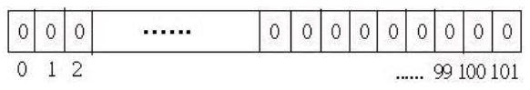
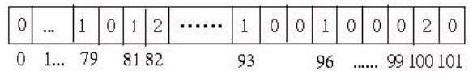
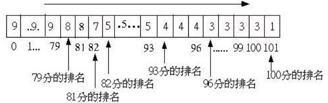

得分排行
December 1, 2021假設有教師依學生座號輸入分數，希望在輸入完畢後顯示學生分數的排行，當然學生的分數可能相同。
解法思路
雖然這問題要解不難，使用額外的排行陣列走訪分數陣列就可以了，直接使用 C 程式片段說明：
for(i = 0; i < count; i++) {
juni[i] = 1;
for(j = 0; j < count; j++) if(score[j] > score[i]) {
juni[i]++;
}
}
printf("得分\t排行\n");
for(i = 0; i < count; i++)
printf("%d\t%d\n", score[i], juni[i]);
雖然簡單，但是反覆計算的次數是 n²，如果 n 值變大，那麼運算的時間就會拖長；改變 juni 陣列的長度為 n + 2，並將初始值設定為 0：

接下來走訪分數陣列，並在分數對應的排行陣列索引元素上加 1：

將排行陣列最右邊的元素設定為 1，然後依序將右邊元素值加至左邊一個元素，最後排行陣列中的「分數 + 1」」就是得該分數的排行：

這樣的方式看來複雜，不過在計算某分數之前排行的人數，假設 89 分以上的人數為 x 人，89 分自然就是 x+1 了，這也是為什麼，排行陣列最右邊要設定為 1 的原因；如果 89 分有 y 人，88 分自然就是 x + y + 1，整個陣列右邊元素向左加的原因正是如此。
如果分數有負分的情況，必須加上一個偏移值，將全部分數先往右偏移一個範圍即可，最後顯示的時候記得減回偏移值就可以了。
程式實作
#include <stdio.h>
#include <stdlib.h>
#define LEN 10
#define MAX 100
#define MIN 0
void count(int*, int*, int);
void aggregate(int*);
void print(int*, int*, int);
int main(void) {
int scores[LEN] = {100, 99, 99, 97, 88, 83, 99, 74, 78, 89};
int juni[MAX + 2] = {0};
count(scores, juni, LEN);
aggregate(juni);
print(scores, juni, LEN);
return 0;
}
void count(int* scores, int* juni, int length) {
int i;
for(i = 0; i < length; i++) {
juni[scores[i]]++;
}
juni[MAX + 1] = 1;
}
void aggregate(int* juni) {
int i;
for(i = MAX; i >= MIN; i--) {
juni[i] = juni[i] + juni[i + 1];
}
}
void print(int* scores, int* juni, int length) {
printf("得分\t排行\n");
int i;
for(i = 0; i < LEN; i++) {
printf("%d\t%d\n", scores[i], juni[scores[i]+1]);
}
}
import java.util.*;
public class Rank {
public static Map<Integer, Integer> juni(int[] scores) {
Map<Integer, Integer> juni =
new TreeMap<>((Integer i1, Integer i2) -> -i1.compareTo(i2));
for(int score : scores) {
juni.put(score,
juni.get(score) == null ? 1 : juni.get(score) + 1);
}
return juni;
}
public static Map<Integer, Integer> aggr(Map<Integer, Integer> juni) {
Map<Integer, Integer> rank = new HashMap<>();
Integer acct = 1;
for(Integer score : juni.keySet()) {
rank.put(score, acct);
acct += juni.get(score);
}
return rank;
}
public static Map<Integer, Integer> rank(int[] scores) {
return aggr(juni(scores));
}
public static void main(String[] args) {
int[] scores = {100, 99, 99, 97, 88, 83, 99, 74, 78, 89};
Map<Integer, Integer> rank = rank(scores);
for(int score :scores) {
System.out.printf("%d\t%d%n", score, rank.get(score));
}
}
}
from functools import reduce
def updated(org, dt):
keys = set(org.keys()) | set(dt.keys())
return dict((key, dt.get(key, org.get(key))) for key in keys)
def rank(scores):
juni = reduce(
lambda acct, score: updated(acct, {score : acct.get(score, 0) + 1}),
scores, {})
sortedKeys = list(reversed(sorted(juni.keys())))
at = reduce(
lambda acct, score: acct + [acct[-1] + juni[score]],
sortedKeys, [1])
return dict(zip(sortedKeys, at))
scores = [100, 99, 99, 97, 88, 83, 99, 74, 78, 89]
rankDict = rank(scores)
for score in scores:
print('%d\t%d' % (score, rankDict[score]))
def rank(scores: List[Int]) = {
val juni = (Map[Int, Int]() /: scores)(
(acct, score) => acct ++ Map(score -> (acct.getOrElse(score, 0) + 1)))
val sortedKeys = juni.keys.toList.sortWith(_ < _)
val at = (sortedKeys :\ List(1))(
(score, acct) => (acct.head + juni(score)) :: acct)
sortedKeys.zip(at.tail).toMap
}
val scores = List(100, 99, 99, 97, 88, 83, 99, 74, 78, 89)
val rankDict = rank(scores)
scores.foreach(score => println("%d\t%d".format(score, rankDict(score))))
def rank(scores)
juni = scores.reduce({}) {|acct, score|
acct.merge(score => acct.fetch(score, 0) + 1)}
sortedKeys = juni.keys.sort.reverse
at = sortedKeys.reduce([1]){|acct, score|
acct + [acct[-1] + juni[score]]}
Hash[sortedKeys.zip(at)]
end
scores = [100, 99, 99, 97, 88, 83, 99, 74, 78, 89]
rankDict = rank(scores)
scores.each do |score|
print "#{score}\t#{rankDict[score]}\n"
end
Object.prototype.getOrElse = function(key, elseValue) {
return this[key] ? this[key] : elseValue;
};
Object.prototype.sortedKeys = function(f) {
var keys = [];
for(var key in this) if(this.hasOwnProperty(key)) { keys.push(key); }
return keys.sort(f);
};
Array.prototype.reduce = function(init, f) {
var value = init;
for(var i = 0; i < this.length; i++) { value = f(value, this[i]); }
return value;
};
Array.prototype.getLast = function() { return this[this.length - 1]; };
Array.prototype.zip = function(arr) {
var zipped = [];
for(var i = 0; i < this.length; i++) { zipped.push([this[i], arr[i]]); }
return zipped;
};
Object.fromArray = function(arr) {
var obj = {};
for(var i = 0; i < arr.length; i++) { obj[arr[i][0]] = arr[i][1]; }
return obj;
};
function rank(scores) {
var juni = scores.reduce({}, function(acct, score) {
acct[score] = acct.getOrElse(score, 0) + 1;
return acct;
});
var sortedScores = juni.sortedKeys(function(v1, v2) { return v2 - v1; });
var at = sortedScores.reduce([1], function(acct, score) {
acct.push(acct.getLast() + juni[score]);
return acct;
});
return Object.fromArray(sortedScores.zip(at));
}
var scores = [100, 99, 99, 97, 88, 83, 99, 74, 78, 89];
var rankObj = rank(scores);
scores.forEach(function(score) { print(score + " : " + rankObj[score]); });
import qualified Data.Map as Map
get key m = v
where Just v = Map.lookup key m
getOrElse org elseV = case org of Just v -> v
Nothing -> elseV
rank scores = Map.fromList $ zip sortedKeys $ tail at
where
juni = foldl (\acct score ->
Map.insert score (getOrElse (Map.lookup score acct) 0 + 1) acct)
Map.empty scores
sortedKeys = Map.keys juni
at = foldr (\score acct ->
((head acct) + (get score juni)) : acct) [1] sortedKeys
main = sequence [putStrLn
(show score ++ " : " ++ show (get score rankMap)) | score <- scores]
where scores = [100, 99, 99, 97, 88, 83, 99, 74, 78, 89]
rankMap = rank scores